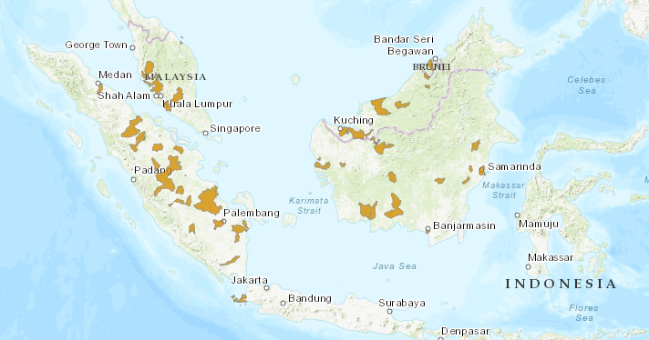

The false gharial (Tomistoma schlegelii), also known as the Sunda gharial, is a large freshwater crocodilian native to Southeast Asia recognized by its exceptionally long, slender snout.
Basic Information
Scientific Classification
| Kingdom | Phylum | Class | Order | Suborder | Family | Genus | Species | Subspecies |
|---|---|---|---|---|---|---|---|---|
| Animalia | Chordata | Reptilia | Crocodylia | N/A | Gavialidae | Tomistominae | T. schlegelii | N/A |
Physical Profile
| Height | Weight | Length | 4 - 4.5 m (13 - 15 ft ) | 350 - 400lb (159 - 181kg) | 16 - 20ft (5 - 6 m) |
|---|
Habitat & Geography

Sunda Gharial are found in the rivers and wetlands of Indonesia and Malaysia.
| Extant | Possibly Extinct | Extinct |
|
|---|
Ecology & Behavior
- Diet: Fish
- Activity: Diurnal
- Reproduction: Nesting in riverbanks
- Lifespan: Up to 30 years
- Social Structure: Solitary
- Communication: Vocalizations and body language
- Territorial Behavior: Territory defended against conspecifics
- Predators: Humans, large mammals